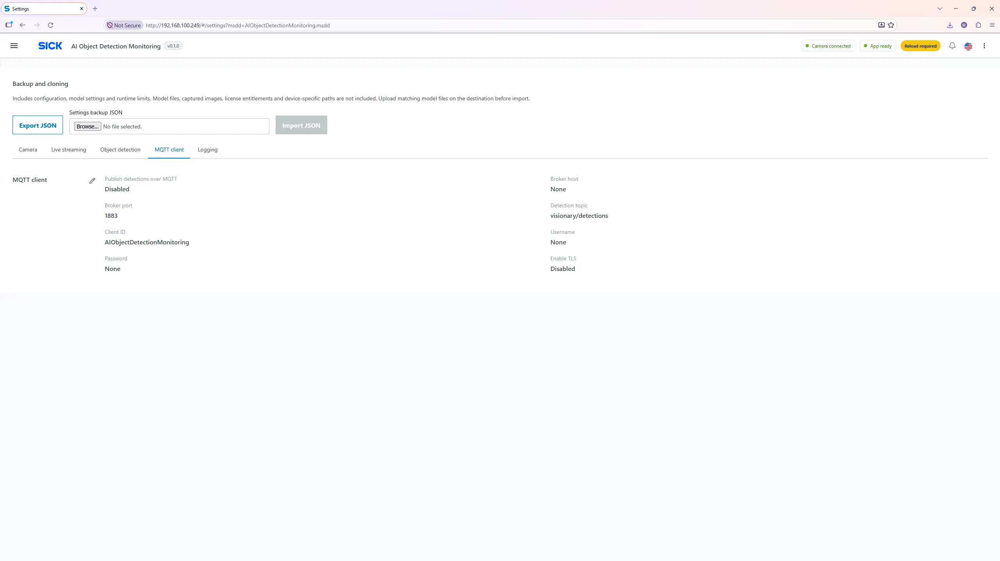

Settings → MQTT client
MQTT Client Settings
Configure optional publication of filtered live detection results to an external MQTT broker. MQTT is disabled in the supplied optimized settings.

Configuration fields
| Parameter | Meaning |
|---|---|
| Enable MQTT | Switch on result publication. Default/optimized Off. |
| Host | DNS name or IP address of the external MQTT broker, reachable from the camera. |
| Port | Broker TCP port, 1–65,535; optimized/default 1883 for a non-TLS connection. |
| Topic |
Publish destination; optimized/default
visionary/detections.
|
| Client ID |
MQTT client identity, default
AIObjectDetectionMonitoring. It should be unique
per device on the same broker.
|
| Username | Optional broker authentication username. |
| Password | Optional broker authentication password. For security, reads of current settings return this value as blank; a blank update retains the existing password. |
| TLS | Enable encrypted MQTT transport when broker setup and the device trust configuration support it. Validate connectivity and certificates for the deployed camera environment. |
Enable external results
- Confirm network routing/firewall permits the camera to reach the intended broker.
- Open Settings → MQTT client → Edit. Check Enable MQTT.
- Enter broker host, port, topic, unique Client ID and credentials as applicable. Enable TLS if required by the broker.
- Click Save, then Reload app.
- Use a subscribed MQTT client on the configured topic to verify incoming detection JSON while an enabled model runs.
Output semantics: MQTT publishes
current detection results per model, including filtered/held
states where applicable, not cumulative product counts. It is not a
durable guaranteed-delivery message queue; plan for temporary
network outages and dropped updates in external consumers.
When MQTT is not connecting
Check host/port, broker availability, network segmentation, username/password, client-ID collisions, TLS requirement and device time/trust setup. Review Log Monitoring for connection errors. MQTT and Crown WebSocket are separate outputs.